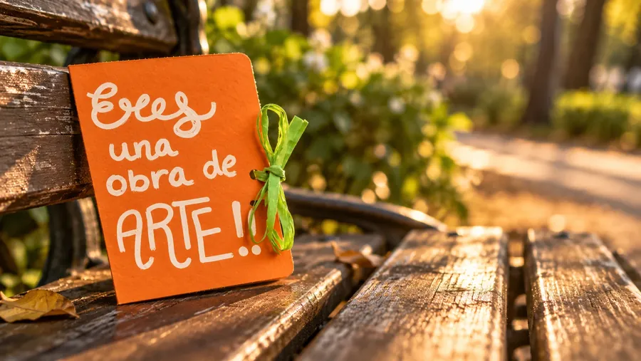
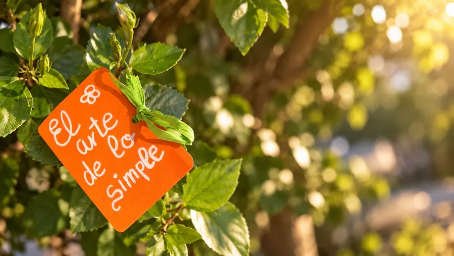
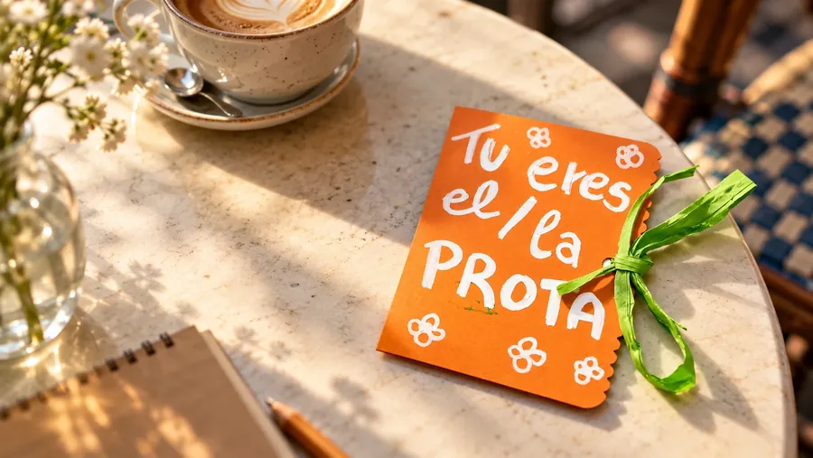
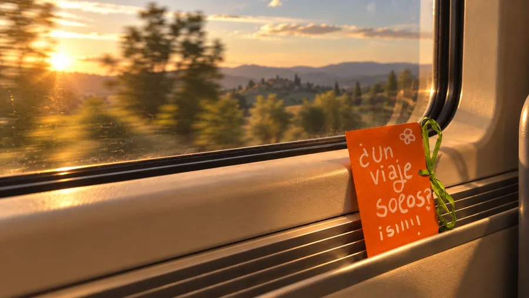

Sobre mí
Un 13 de abril de 2021 abrí una cuenta de Instagram con la idea de publicar frases bonitas. De esas que se guardan en favoritos y se comparten en las historias. Pero algo no encajaba. Las frases estaban bien, pero faltaba algo real, algo que llegara de verdad.
Y entonces empecé a escribir cartitas.
Sin destinatario. Sin remitente. Solo papel, bolígrafo y la sensación de que alguien, en algún lugar de Madrid, quizás las necesitaba. Las dejé en bancos de parques, junto a la entrada del metro o entre los libros de una biblioteca. Y así empezó todo: Queridos Desconocidos.
En la primavera de 2022 fui un pasito más allá. Si alguien hacía algo por mí —darme una tirita, ayudarme a llegar a algún sitio— le entregaba una cartita de agradecimiento escrita a mano. Porque un desconocido que hacía algo por mí merecía algo más que un simple «gracias». Algo así como una cadena de favores.
Escribir es mi manera de relajarme y de poner en palabras lo que a veces no sé cómo decir de otra forma. Aunque es un proyecto que me apasiona, hay días en que la rutina lo complica todo y no tengo tiempo de dejarte una cartita. Pero entonces releo los mensajes de quienes encuentran alguna de las mías, y la ilusión vuelve de golpe.
Eso es lo que me mantiene aquí.
Si tú encontraste una de mis cartitas, espero que en ese momento hayas sentido lo mismo que yo imagino: curiosidad primero, y luego esa sensación pequeña y bonita de que alguien pensó en ti sin conocerte.
Porque de eso va todo esto.
Cómo nace cada cartita
Escribo a mano, con boli y con mi letra.
Camino buscando el lugar más especial: un banco, junto a la entrada del metro, una ramita.
La dejo por Madrid para quien la necesite.
Dónde las dejo

Banco del parque

Una ramita

Mesa de café

Ventana de tren
¿Quieres tu propia cartita?
para ti